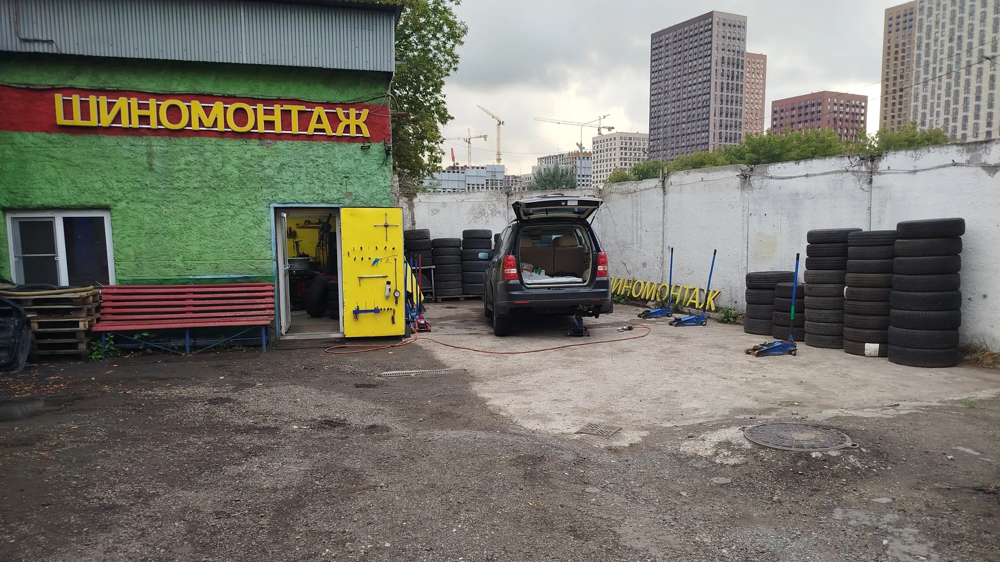
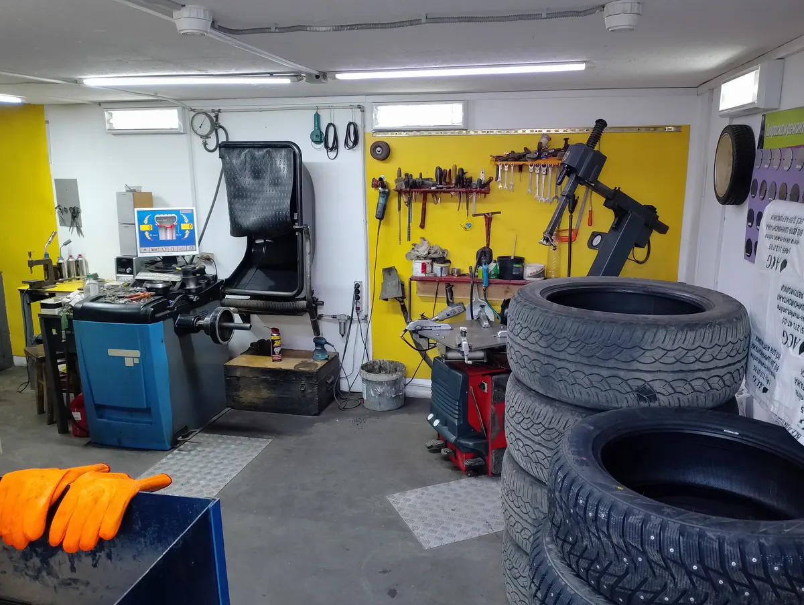
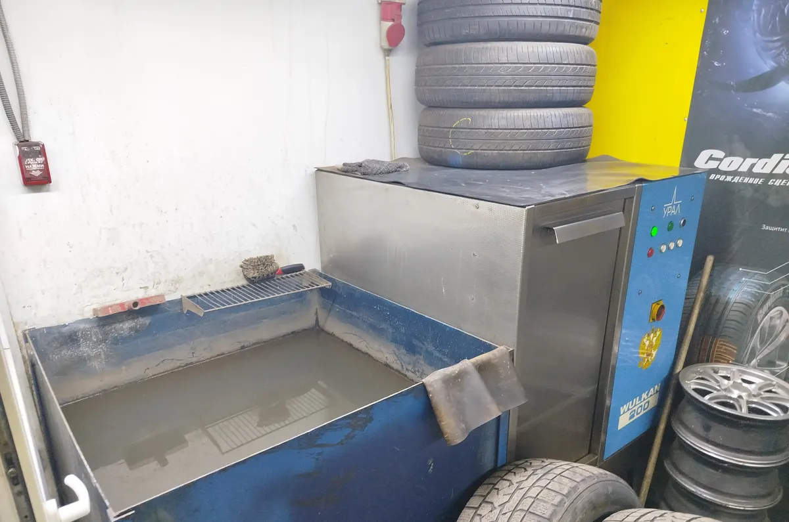
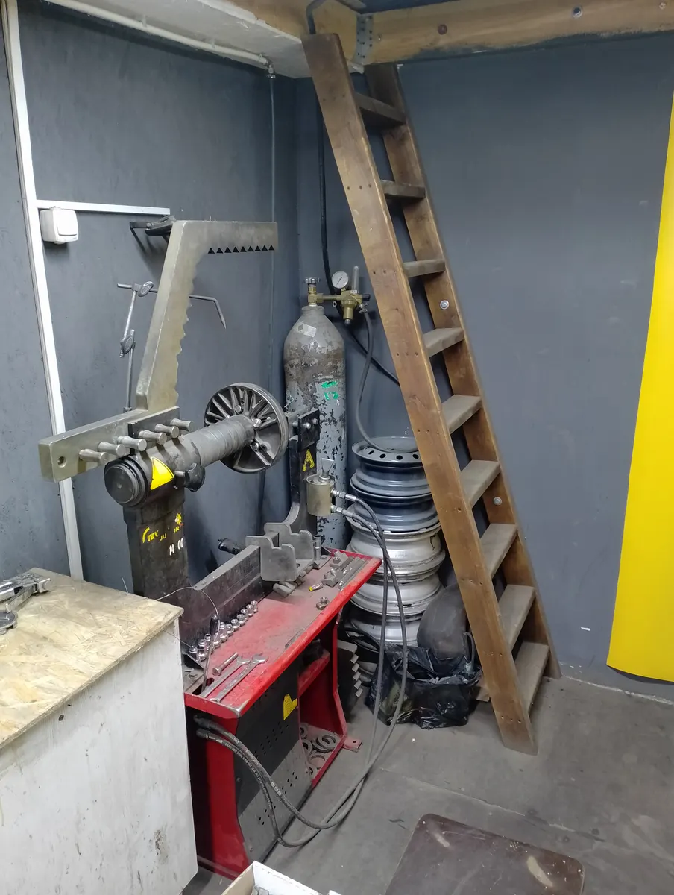

Шиномонтаж · Москва, метро Братиславская
Шиномонтаж в Москве – чиним то, от чего отказались другие
Снимаем секретки, правим и варим литые диски, ремонтируем боковые порезы. Нижние Поля, 29, стр. 17.

- Больше 10 лет на одном месте
- Каждый день с 10:00 до 20:00
- Запись по телефону и в WhatsApp
Цены
Стоимость зависит от радиуса и от того, что случилось с колесом. Напишите или позвоните – назовём сумму под вашу машину.
Переобувка
- Переобуть все колёсадо 3 000 ₽, зависит от радиусаот 1 000 ₽
Ремонт шин
- Ремонт проколауточнить
- Ремонт бокового порезавулканизацияуточнить
- Балансировкауточнить
Диски и секретки
- Правка и прокатка дисковуточнить
- Сварка аргономтрещины на литьеуточнить
- Покраска и алмазная проточкауточнить
- Снятие секретокуточнить
Как проходит
- 01
Пишете или звоните
Говорите, что с колесом, и выбираете время. В сезон без записи бывает очередь.
- 02
Заезжаете во двор
Зелёное здание с красной вывеской «Шиномонтаж» и жёлтой дверью, за забором на территории парковки.
- 03
Мастер смотрит колесо
Называет, что нужно сделать и сколько это стоит.
- 04
Делаем и отдаём машину
Забираете машину и оплачиваете наличными, картой или переводом.



За чем к нам едут
С тем, от чего отказались в другом сервисе
Сорванные секретки, боковые порезы, трещины на литых дисках, низкий профиль.
Шины и диски чиним в одном месте
Шиномонтаж, балансировка, правка и прокатка дисков, сварка аргоном, покраска и алмазная проточка.
Гарантия на работы
На что и на какой срок – назовём при записи.
Отзывы с Яндекс.Карт
«Мужики, привет от диска с мерседеса. Спасибо огромное, сразу видно профи не только на словах, Цены лучше, чем у других, и все четко. Заварили аргоном трещину на литье, хорошо залудили шов. Человеческое спасибо!!»
Деня Третьяков · 15 ноября 2023
«Менял здесь летнюю резину на зимнюю. Павел отлично всё сделал, быстро и качественно. Дал несколько советов по эксплуатации шин. Рекомендую!»
Прохоров Евгений · 14 декабря 2025
«Спускало переднее колесо, медленно как-то, 0.5 бара за неделю. Приехал, быстро нашли прокол, залатали. На всё чуть меньше 20 минут. Рекомендую.»
Виктор _ · 21 сентября 2025
Отзывы с карточки на Яндекс.Картах, без правок.
Контакты
- Адрес
- Нижние Поля, 29, стр. 17, Москва
- Часы
- Каждый день 10:00–20:00
- Телефон
- +7 (915) 114-72-99